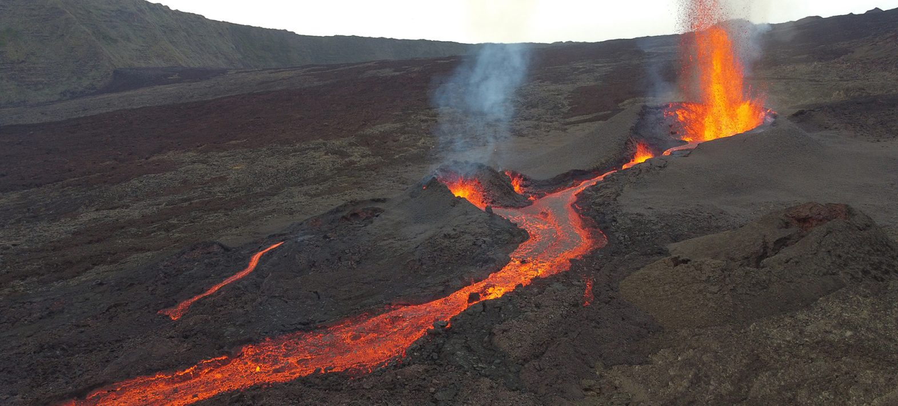
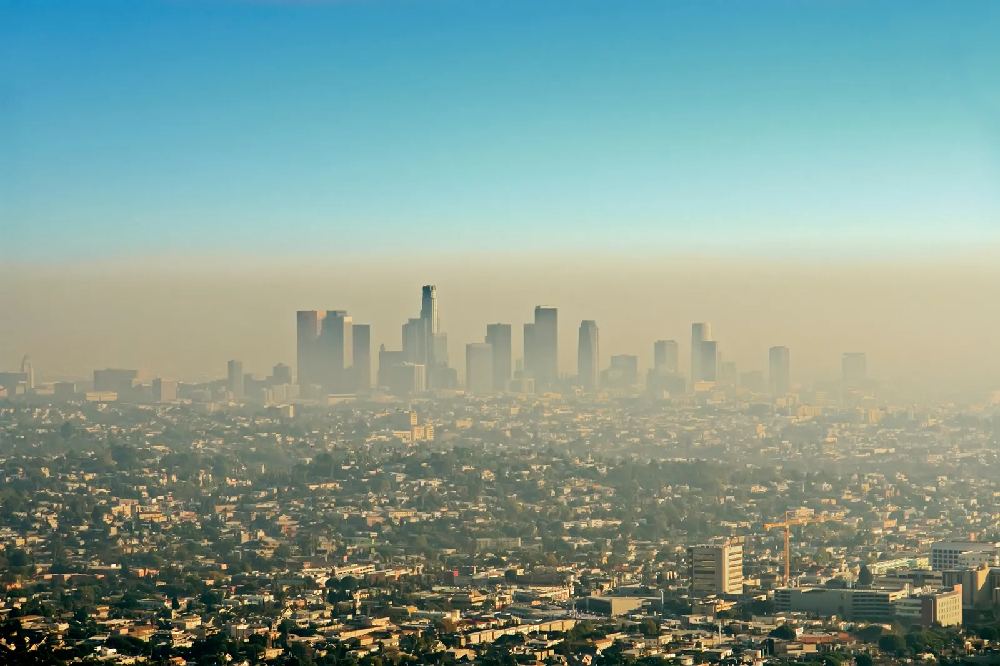

L’opération concerne les missions spatiales de sondage et de spectro-imagerie permettant la mesure des gaz à effet de serre (GES) depuis
l’espace, dans plusieurs domaines de longueur d’onde couvrant le proche infrarouge (SWIR pour Short Wave InfraRed) et l’infrarouge thermique
(TIR pour Thermal InfraRed).
Trois axes de recherches, associées à des phases, sont abordés par SPASCIA dans le cadre de cette opération. Ces axes structurent les efforts de
recherche cohérents et complémentaires développés par SPASCIA sur le développement et l’exploitation des moyens d’observation des GES pour la mesure
de leurs concentrations dans l’atmosphère et de leurs émissions de surface, en lien avec des problématiques de suivi des activités anthropiques.

Physique de la mesure

Analyse de performance et traitement de données/produits